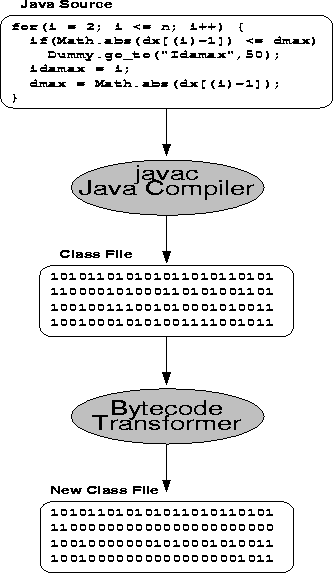

It is preferable to translate FORTRAN programs to Java source code rather than Jasmin opcode for many reasons, but there has been a major obstacle to doing this: the GOTO statement. The FORTRAN GOTO is hard to translate to Java source code because Java does not support a goto statement at all. The developers of the Java language deliberately omitted the goto statement because they felt it would simplify the language and eliminate some common misuses of the goto [10]. Their replacement for the goto includes the multi-level break and continue statements. This section describes our approach to translating FORTRAN to Java source code while still allowing the use of GOTOs.
For our purposes, a GOTO statement in FORTRAN falls into one of two categories: (1) one that can be translated into an equivalent Java construct free of GOTOs (such as while, break, continue, etc.) or (2) one that cannot be translated into such a construct.
First, we examine some examples from the first category. The following segment of code from dlamch.f shows a simulated while loop written using an IF statement and a GOTO.
10 CONTINUE
IF( C.EQ.ONE ) THEN
A = 2*A
C = DLAMC3( A, ONE )
C = DLAMC3( C, -A )
GO TO 10
END IF
To recognize this type of construct, f2j looks for two characteristics: (1) an IF statement with a labeled CONTINUE preceding it and (2) a GOTO statement at the end of the IF block whose target is the top of the IF block. Nested simulated while loops are recognized by pushing the label of the most enclosing IF block on a stack and comparing the destination of an enclosed GOTO with that label. The label is then popped off after emitting the IF block. The Java translation for the above loop would be:
while (c == one) {
a = 2*a;
c = Dlamc3.dlamc3(a,one);
c = Dlamc3.dlamc3(c,-a);
} // Close if()
Frequently FORTRAN programs contain GOTO statements within DO loops. This includes many different situations, but we may roughly categorize them as follows:
The first two cases correspond to Java's continue and labeled continue respectively. In Java, the labeled continue is used in cases where there are multiple nested loops and the programmer needs to distinguish which loop to continue. The following code segment from idamax.f shows a GOTO that can be translated to a Java continue statement.
do 30 i = 2,n
if(dabs(dx(i)).le.dmax) go to 30
idamax = i
dmax = dabs(dx(i))
30 continue
Detecting this kind of construct is similar to detecting a simulated while loop. Each time f2j starts generating a loop, the label of that loop's CONTINUE statement is pushed onto a stack. Then when a GOTO is encountered, f2j examines the stack to determine if the GOTO is branching to the CONTINUE statement of an enclosing DO loop. The difference between translating continue statements and simulated while statements is that with continue statements, we need to examine all labels on the stack, not just the top. Notice in the following Java translation that even though we could have generated an unlabeled continue statement, we chose to generate labeled continue statements in all cases to help ensure clarity.
forloop30:
for (i = 2; i <= n; i++) {
if (Math.abs(dx[(i)- 1]) <= dmax)
continue forloop30;
idamax = i;
dmax = Math.abs(dx[(i)- 1]);
} // Close for() loop.
The third and fourth cases from above correspond to Java's break and labeled break respectively. f2j does not currently detect or translate these cases, but they would be handled very similarly to the translation of continue statements. The main exception is that labeled break statements in Java may ``break out'' of any enclosing statement, while labeled continue statements are restricted to loops (while, for, or do). Thus, there may be a much wider range of constructs in which a GOTO can be converted to a labeled break. The following segment of code is a modified version of the previous segment from idamax.f in which the GOTO now branches to the statement following the DO loop.
do 40 i = 2,n
if(dabs(dx(i)).le.dmax) go to 50
idamax = i
dmax = dabs(dx(i))
40 continue
50 a = 1
Future versions of f2j will translate the ``go to 50'' to a break statement.
The final case from the above list (that is, the GOTO branches somewhere else) has been the most difficult to deal with - it does not correspond to any equivalent Java construct. Our goal is to restructure as many FORTRAN constructs containing GOTOs as possible into equivalent Java constructs. But there will always be some GOTOs that cannot be translated in this way. To handle these cases, we have developed a method to insert GOTO statements into Java bytecode (see figure 1).

Figure 1: Translation of GOTO statements
First, we use f2java to translate the FORTRAN code to Java. GOTOs are automatically translated as calls to a dummy class. So, go to 100 would be translated as Dummy.go_to(100). The labels in the FORTRAN source are also translated as calls to the dummy class (for example, the label 100 becomes Dummy.label(100) in the Java source).
Next we compile the java file as usual (using javac).
At this point, we could run the resulting class file (bytecode), but instead of branching, the Dummy methods would be called. The program would, almost invariably, run incorrectly. The dummy calls act only as placeholders in the bytecode to signify where real goto instructions should be inserted. We have developed a bytecode translation tool to perform these insertions. Since JVM instructions have variable widths (and for other reasons), we must parse the class file in order to identify the dummy method calls. For this, we borrowed parsing code from javab, a bytecode parallelizing tool [11]. After the bytecode has been parsed, we scan it for calls to Dummy.label(), recording the label and address in a hash table. We then zero the entire instruction sequence for the method call so that the resulting bytecode does not attempt to call Dummy.label() (in the JVM, a zero byte corresponds to the nop instruction - i.e., it does nothing). On the second pass, we scan for calls to Dummy.go_to(). For each call, we look up the target label of the goto in the hash table to obtain the actual bytecode address of the label. Then we may replace the Dummy.go_to() method invocation with an actual goto instruction. Since the method invocation instruction sequence is longer than the goto instruction, we zero out the remaining bytes.
So far, this method has been successful in translating GOTO statements in the BLAS/LAPACK source code and testing routines. There may be some cases in which ``hacking'' the compiler-produced bytecode as we have done will produce unexpected results, possibly putting the JVM into an unusual state. The Java compiler generates code under certain assumptions, one example of which is that the program should not branch to a statement within a loop from outside the loop. Our GOTO translation method has the potential to violate these assumptions, although we have not yet come across a specific instance in the BLAS or LAPACK source.